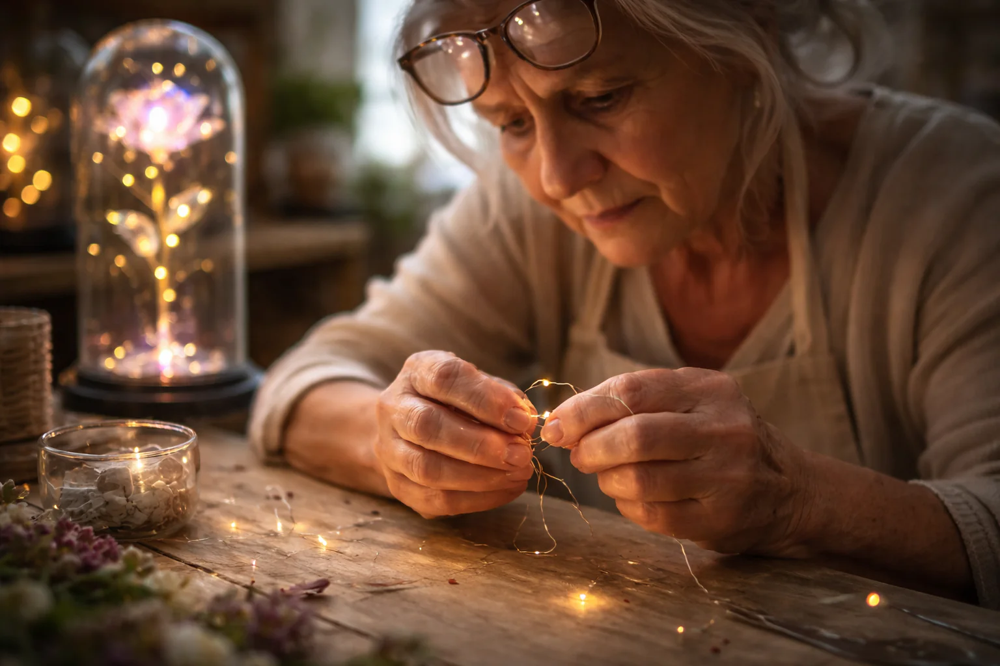

74letá řemeslnice z Bretaně vyprodává své svítící věčné růže před definitivním uzavřením své dílny
Dopis od Colette Hervé, tvůrkyně věčných růží, Vannes
Vannes – Colette Hervé, 74 let, ukončí svou dvanáctiletou řemeslnou činnost 28. února 2026. Ve své dílně o rozloze 22 m² poblíž přístavu naposledy balí svá díla: svítící růže pod skleněným poklopem, které skládala jednu po druhé svýma unavenýma rukama.
Důvod uzavření? Prudce se zhoršující zrak, třes v rukou a tělo, které odmítá poslušnost. „Můj oční lékař mě prosil měsíce, abych přestala,“ přiznává se slzami v očích. „Říkal, že si trvale poškodím zrak. Měl pravdu.“
Než definitivně zatáhne rolety, řemeslnice vyprodává svých posledních 489 růží. Tento výprodej není běžnou obchodní operací: je to konec milostného příběhu, který dojal celou Bretani.
„Chtěla jsem, aby mé poslední výtvory našly svůj domov před Valentýnem,“ vysvětluje. „Aby naposledy rozzářily lásku, tak jako to dělaly po dobu 12 let.“

Tragedie, která vše odstartovala: když se růže stane světlem
Prosinec 2013. André Hervé, manžel Colette, umírá po 47 letech manželství. Agresivní rakovina. Colette zůstala sama v domě, kde jí každý kout připomínal jeho nepřítomnost.
„Noc se stala mým nepřítelem. Ticho a tma mi připomínaly prázdnotu,“ vypráví. Vše se změnilo jednoho večera, když její vnučka Léa, bojící se tmy, poprosila o světýlko. Colette owinula světelný řetěz kolem látkové růže, kterou jí André daroval před lety.
„Babičko, to vypadá jako růže z Krásky a zvířete!“ – vykřikla dívenka. Tak se zrodil nápad na „Věčnou růži“, která svítí ve tmě jako maják lásky.

387 růží ročně, ručně skládaných v záři dílny
Každý okvětní lístek je ručně vystřižen ze speciálního perleťového papíru a poté jemně zahřát, aby získal své přirozené zakřivení. Výroba jedné růže trvá 4 až 5 hodin. „Moje tělo řeklo dost,“ shrnuje Colette. „A tentokrát ho musím poslechnout.“

Neuvěřitelná vlna solidarity
Když se zpráva o uzavření rozšířila, zákazníci přispěchali na pomoc. Colette se rozhodla vyprodat poslední kusy za polovinu ceny, aby mohla dílnu důstojně uzavřít. „Je to ideální dárek k Valentýnu. Něco, co bude svítit 20 let, zatímco květiny z květinářství dávno zvadnou.“
Recenze zákazníků
✅ Nathalie a Marc, manželé 28 let, Brest
⭐⭐⭐⭐⭐
„Manžel mi ji daroval k 20. výročí. Stojí na mém nočním stolku a každý večer ji rozsvěcuji. Je to náš rituál. Teď jsem objednala jednu pro dceru k její svatbě.“
✅ Christine, 56 let, Paříž
⭐⭐⭐⭐⭐
„Darovala jsem ji mamince k 80. narozeninám. Žije sama a tato růže jí dodává pocit něčí přítomnosti. Je to ten nejkrásnější dárek, jaký jsem jí mohla dát.“
✅ Emilie, 34 let, Lyon
⭐⭐⭐⭐⭐
„Procházela jsem těžkým obdobím a kamarádka mi dala tuto růži, abych měla ve tmě vždy světlo. Toto malé světýlko mi opravdu pomohlo. Děkuji, Colette.“
Posledních 489 kusů – dědictví vášně
Každá růže je unikátní. Jakmile se těchto 489 kusů prodá, dílna bude navždy uzavřena. Všechny objednávky podané do 10. února dorazí do Valentýna.
KLIKNĚTE ZDE PRO ZÍSKÁNÍ VĚČNÉ RŮŽE OD COLETTE S 50% SLEVOU >>